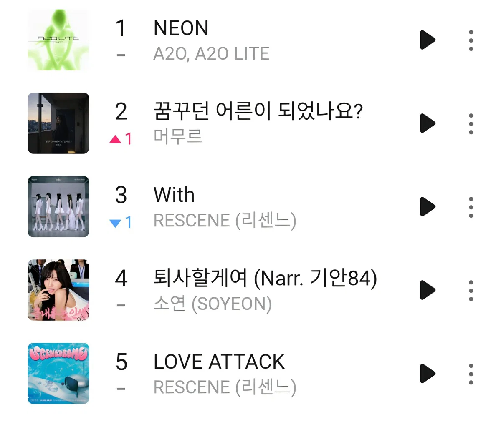

오늘자 멜론 일간 2위로 올라온곡이 ai곡
지금 추이면 곧 1위로 갈수도있다고함

오늘자 멜론 일간 2위로 올라온곡이 ai곡
지금 추이면 곧 1위로 갈수도있다고함
ai 노래 좋긴 좋던데
가수들이 하는 이야기 들어보니까
ai는 호흡하는 구간이 없이 계속 노래를 부른다고 하더라고
그래서 좀 불러보니까 진짜임 ㅋㅋㅋ
따라부르기 개같음 ㅋ
그런 줄 알았는데...
요즘 나오는 ai 곡은 호흡하는 디테일까지 첨가하는 경우도 많음
그래서 '아 이건 사람이 부른 노래겠지?' 하는 곡도 찾아보면 ai곡인 경우가 꽤 있음
물론 ai 특유의 느낌은 여전히 있는데 그것도 얼마 남지 않았다고 봄
그말 들으니 360도로 관절이 회전하는 로봇이 떠올랐어
사람이 그걸 어떻게 이기겠어
720도 회전 째트킥으로
Ai가 쓴 곡이라도 퀄리티가 훌륭하면 대중들의 지지를 받는다
"목소리만"
좃론차트는 좀
메크로 돌리는건 좆론이나 좆티파이나 좆플뮤직 좆글뮤직 어딜가나 그 팬덤들은 똑같음
인간시대의 끝이도래했다 콘
저노래도 말많던데
에초에 뭐 이렇다할 거도 없이 짱자본처럼 바이럴존나 돌린거도 아닌데 그냥 느닷없이 상위권에 들어가있고
가수페이지 들어가보면 토끼단마냥 수호단들 상주해있고
🇨🇳
예전 닐로 장덕철 같은 발라더들 상위로 올라왔을 때 마냥 비슷한 거지 뭐
근데 ai가 만들었다고? 신기해서 화제되는 것 뿐 정작 ai가 만든 곡으로 차트 도배되면 메리트가 없어짐
ai 곡 찬양하는 애들 많은데 제약도 엄청 많고 설령 사람마냥 만들어내도 둘 중 하나임
해외까지 싹 다 음악시장 전체가 몰락하거나 결국 다시 사람이 만든 곡을 듣거나
뭐 ai 음악 카테고리는 따로 생길 수도 있긴 하겠네
작사 작곡은 사람이네ㄷㄷ
감성 개 잘건드린거같음
난 저애기들모아서 춤이어쩌니하는 네온이1등인게더신기하던데 체감상 리센느인기가 더쩌는거같은데
하나는 수백번 참았다고 다 때려치고 퇴사하겠대고, 하나는 어릴 적 몰랐던 고민들이 어깨에 내려앉아 짓누른대고.
퇴사할게여나 저 곡이나 분위기는 다르지만 결국 둘 다 말하는 건 '세상 살기 참 힘들다'는 거고, 많은 사람들이 거기에 공감하고 위로받고 있으니... 다들 많이 힘든가봐. 개부이들도 힘내라
ai라도 곡 좋으면 가야지 어쩌겠어
좆같은 트롯트 없어서 보기좋다
2026년에도 멜론차트에 의미부여를 하고 있다는게 참